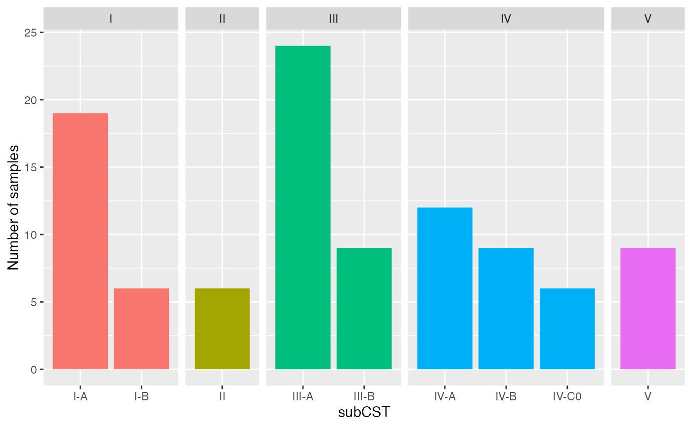

ValenciaR.Rmd
library(ValenciaR) # devtools::install_github("lasy/ValenciaR")
#> Loading required package: magrittr
library(ggplot2)
library(phyloseq)
library(magrittr)
library(dplyr)
#>
#> Attaching package: 'dplyr'
#> The following objects are masked from 'package:stats':
#>
#> filter, lag
#> The following objects are masked from 'package:base':
#>
#> intersect, setdiff, setequal, union
valencia_centroids <- get_Valencia_clusters()
pseudo_valencia_tax_table <-
build_Valencia_tax_table(taxa_vec = colnames(valencia_centroids))
data("example_data")
set.seed(1)
random_samples <- sample(example_data@sam_data$SampleID, 100)
example_data <- example_data %>% subset_samples(SampleID %in% random_samples)
input <- example_data@otu_table %>% as.matrix()
tax_table <-
example_data@tax_table %>%
as.data.frame() %>%
set_rownames(1:nrow(example_data@tax_table)) %>%
mutate(Domain = Kingdom)
res <- convert_to_Valencia_taxonomy(input = input, tax_table = tax_table)
CSTs <- assign_to_Valencia_clusters(res$converted_input, distance = "BC")
#> Warning in assign_to_Valencia_clusters(res$converted_input, distance = "BC"): Assuming count data (as opposed to proportions) were provided.
#> Warning in assign_to_Valencia_clusters(res$converted_input, distance = "BC"): `input` does not have counts/proportions for all taxa represented in Valencia.
#> Data for 34/199 taxa are missing.
#> These missing taxa represent around 2% (0-6%) of Valencia cluster composition.
#> Their list is in the `missing_taxa` component of the returned value.
ggplot(CSTs$assignment, aes(x = subCST, fill = CST)) +
geom_bar() +
facet_grid(. ~ CST, scales = "free", space = "free") +
ylab("Number of samples") +
guides(fill = "none")